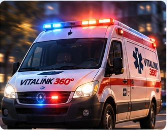

Estamos para cuidarte.
Asistencia cercana, en cada momento que importa.
✚ Atención médica♧ Acompañamiento
FUNCIÓN DE PRUEBA♢ Asistencia
¿Necesitás ayuda urgente?Presioná para conocer cómo funciona
No solicita ambulancias en esta versión
ACCESOS RÁPIDOSTodo a un toque
Nuestros servicios
ConocelosDiseñado para acompañarte
Accesible, simple y pensado para toda la familia.